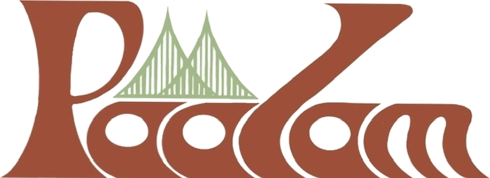
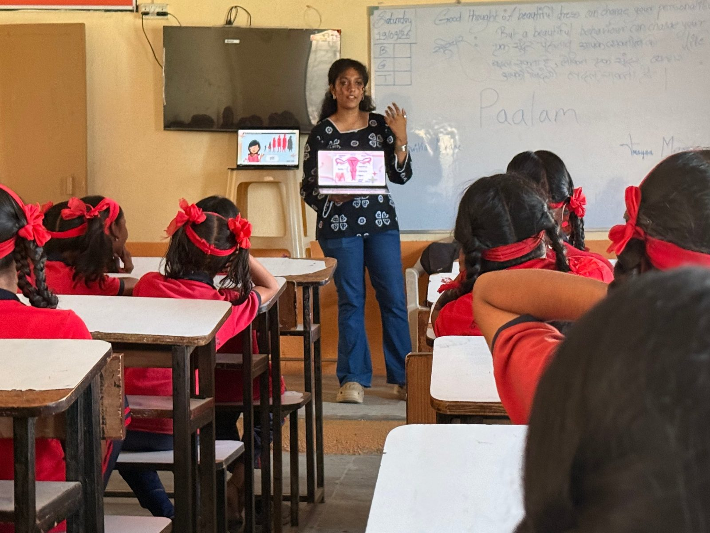

Malayalam for "Bridge"
A youth led initiative dismantling the culture of silence surrounding menstrual health across India.

In India, menstruation is a major reason adolescent girls leave education. Not only poverty or distance, but silence.
Dasra's 2014 Spot On! report estimated that around 23 million girls in India drop out of school each year, with poor menstrual hygiene facilities and awareness as key factors. They are not incapable. The infrastructure, the knowledge and the conversation were never built for them.
According to NFHS 5 (2019 to 2021), roughly 73% of rural women aged 15 to 24 use hygienic methods during menstruation. That leaves more than a quarter still relying on cloth or other unsafe options. Period poverty is not abstract, and it compounds every other inequality a girl faces.
UNICEF has reported that 71% of adolescent girls in India know nothing about menstruation before their first period. The result is not only confusion. It is shame, and shame passes between generations unless something interrupts it.
Dasra's 2015 Dignity for Her report found that girls miss around six school days a month when they cannot manage their periods at school, contributing to roughly one in five girls dropping out at puberty. This is a solvable problem, and solving it is within our reach.
Sources: Dasra, Spot On! (2014) and Dignity for Her (2015); National Family Health Survey 5, Ministry of Health and Family Welfare (2019 to 2021); UNICEF India.
"If not us, who?
If not now, when?"
The founding question of Paalam